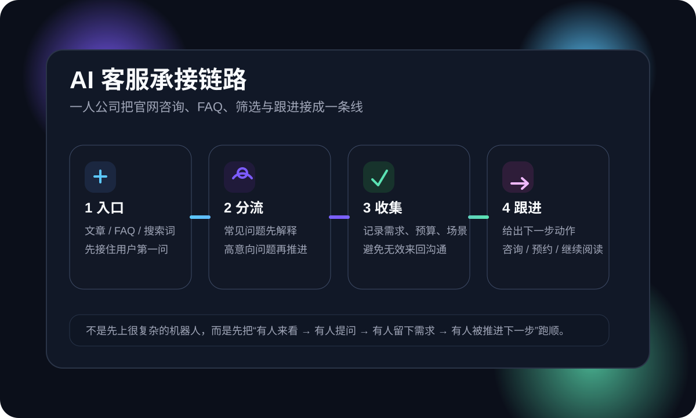

AI客服响应时间怎么写：一人公司别再只写“24小时内回复”，先把 first response time、SLA 和预期管理拆开（2026）
很多一人公司把 AI 客服的时效承诺写成一句“工作日 24 小时内回复”。看起来像是在兜底，实际上往往把高意图咨询直接送走。因为用户真正想知道的不是“你会不会回”，而是“我现在发出去之后，几分钟内会不会先有人接住、我需要等多久、等的这段时间我该做什么、如果很急能不能被优先识别”。真正能稳住转化的，不是一个空泛数字，而是把 first response time、meaningful response、final resolution 和 SLA 预期管理 拆开写清楚。
问题不在“回得慢”，而在“用户被丢进了黑箱”
Intercom 近几篇关于 customer service 的高质量文章有一个共同判断：AI 把客户预期整体拉高了。不是只有大公司才会被要求更快，一人公司也一样。用户现在已经被各种 AI 助手、即时聊天和自动状态更新教育过一轮，默认会期待“你至少先告诉我接下来会发生什么”。
所以，很多站点真正的问题不是没有写“24 小时内回复”，而是只写了这句话。它把三个完全不同的问题混成了一个答案：
- first response time：几分钟内能不能先接住我、告诉我消息没有丢。
- meaningful response：第一次有效回复什么时候能到，不是机械确认，而是带判断、带方向、带下一步。
- resolution time：这个问题最终什么时候能真正收口，是否需要人工升级。
Intercom 在 conversational support 的文章里有句很值得一人公司抄走的判断：多数用户并不介意等待高质量支持，他们介意的是自己的问题像被丢进了虚空。对官网转化来说，这几乎就是联系页流失的真实原因。
最近这些高质量文章，都在怎么写“响应时效”
为了避免闭门起稿，我先补了一轮同主题检索。浏览器工具本轮超时不可用，所以改走 sitemap + 网页正文抓取，重点看了 Intercom 近年的 customer expectations、support metrics、conversational support 相关文章。它们在写法上有几个非常一致的点：
- 标题角度不是“教你怎么算指标”，而是先抛冲突。比如“体验和效率不用二选一”“客户预期已经变了”“支持指标正在从成本中心走向价值驱动”。
- 开头先用真实处境把人拉进来。不是先下定义，而是先讲一个用户正在焦虑、等待、需要被接住的场景。
- 正文不把响应时间当孤立指标看。它会同时连到自助内容、分流逻辑、AI 自动化、升级规则、客户留存和营收影响。
- CTA 不是硬卖，而是给一个“下一步就做这个”的动作。比如去看帮助中心、看 Starter Kit、申请演示、继续读相关模块。
- 关键词覆盖很自然。customer expectations、self-service、automation、support metrics、resolution 这些词不是机械堆，而是跟情境一起出现。
吸收完这些文章后，这篇就不能再写成“response time 的定义—公式—总结”那种交作业体了。更适合一人公司主线的改写方式，是把它落回官网转化现场：用户发来第一页消息时，到底该看见什么，才会愿意继续往下走。
真正该写的，不是一个 SLA，而是三层时钟
如果你的网站现在只有一句“工作日 24 小时内回复”，建议立刻拆成三层。因为一人公司最怕的不是承诺保守，而是把不同难度的问题都塞进同一个口径，最后谁都解释不清。
| 层级 | 用户真正关心的事 | 一人公司更合理的页面写法 |
|---|---|---|
| 第一层：AI 首次接住 | 我发出去了没？有人看见了吗？是不是发错地方了？ | “FAQ 类和结构性问题，通常会先收到 AI 首答与分流建议；紧急问题会优先标记。” |
| 第二层：第一次有效判断 | 不是自动回执，我需要知道下一步该做什么。 | “工作日内会给出先改哪 1 页 / 哪 1 步的判断；复杂问题会先说明需要补哪些材料。” |
| 第三层：最终收口时间 | 如果涉及故障、报价、排期、人工介入，到底多久有结论？ | “复杂问题会分流到人工跟进，并同步明确的预计时间，不让你反复追问。” |
Intercom 在 customer expectations 和 support metrics 那几篇文里反复强调两个点：速度重要，但更重要的是 meaningful；以及 别让用户重复描述问题。这对一人公司非常关键。因为你没有大客服团队，真正能省下来的时间，不是用“24 小时”兜一切，而是让 AI 先做接待、归类、补材料提示和预期说明，把最容易掉线索的那 10 分钟先守住。
一人公司官网最容易犯的 4 个时效承诺错误
1）把“收到”冒充成“回复”
用户收到一句“我们已收到你的消息”不等于被服务到了。Intercom 在 support metrics 相关内容里提到，越来越多团队开始看“meaningful response”而不是机械速度，就是因为空洞确认并不能真正减少焦虑。
2）把所有问题都写成同一时效
FAQ 类问题、报价类问题、页面故障、部署报错、复杂项目诊断，本来就不该共用一个时间口径。你越想偷懒统一承诺，用户越难判断自己属于哪一类，也越容易在等待时失去耐心。
3）没有“等待期间先做什么”
Intercom 在 conversational support 的那篇文章里给了一个非常实用的思路：聊天机器人在设定预期的同时，应该顺手推荐相关文章、排查文档或下一步动作。因为用户不怕等，怕的是空等。等待期间有事可做，转化和满意度都会更稳。
4）只承诺快，不承诺边界
“24 小时内回复”听起来像负责任，但如果没有同时写清楚哪些问题适合 AI 先处理、哪些问题会转人工、紧急问题怎么升级，这句承诺最后只会变成一个新的模糊层。

怎么把 response time SLA 写进联系页，既不虚夸，也不吓跑人
更适合一人公司站点的写法，不是报一个很猛的时间，而是给用户一个很清楚的路径。下面这个结构，比“24 小时内回复”更能稳住高意图咨询：
推荐写法：三段式响应预期
- 先说 AI 会先接住什么：FAQ、页面结构判断、资料补齐提醒、问题归类。
- 再说人工什么时候介入：报价、排期、复杂故障、部署断点、需要上下文判断的情况。
- 最后说等待期间用户可以先做什么：先看哪篇 FAQ、先补哪张截图、先发哪一个链接，减少来回追问。
如果你的网站主线是“一人公司 / AI 团队 / 客户承接 / 官网转化”，那时效承诺要服务转化，而不是服务漂亮指标。真正有用的口径更像这样：
- “结构类问题会先收到 AI 初步判断与资料补充建议。”
- “紧急问题会优先标记，不和普通咨询排在同一队列。”
- “复杂问题会明确告诉你下一次人工更新的大致时间，而不是让你反复追。”
这类写法的好处是，它把 时效 和 可预期性 一起交付了。用户看到的不是一句口号，而是一个可感知的流程。
如果你只有很少精力，先优化这两个地方
先改联系页开场白
别再把联系页开头写成“欢迎留言，我们会尽快联系你”。更好的版本应该直接告诉用户：现在发来什么、AI 会先做什么、人工什么时候跟进。这比单独说“24 小时内回复”更像真的有人在负责。
再改确认页 / 自动回复
Intercom 那些文章里还有一个很值得抄的点：把状态更新前移。提交后的确认页、自动回复、帮助中心入口，这三处共同决定用户会不会在 10 分钟后再次回头找你。尤其是一人公司，只要把“收到消息后会发生什么”解释清楚，流失就会降很多。
| 页面位置 | 建议补的内容 | 为什么有用 |
|---|---|---|
| 联系页 Hero | AI 先判断 / 紧急优先标记 / 工作日人工跟进预期 | 先解决“我该不该发”这个决策焦虑 |
| 自动回复 | 不是只确认收到，而是附带 1 个排查动作或相关文章 | 降低二次追问和空等感 |
| 确认页 | 写明下一次状态更新大概在什么时候出现 | 减少用户提交后立刻流失 |
本质上，你卖的不是“秒回”，而是“可被信任的节奏”
Intercom 的 2024 customer service trends 报告里提到，AI 已经直接影响了客户预期；support metrics 那篇又提到，73% 的支持负责人认为客户预期正在提高，但只有 42% 确信自己真的跟上了。这个差距，本质上不是 AI 能不能写出更快的话术，而是你的流程有没有把“接住、解释、更新”这三个动作做实。
对一人公司来说更是如此。因为你最稀缺的资源不是消息量，而是注意力。如果 AI 客服能先把用户放进正确路径、先把等待变得可理解、先把人工需要的信息补齐，你就不需要靠硬扛在线时长去维持“看起来很努力”的服务形象。
结论
一人公司 AI 客服的响应时效，不该再停留在一句“24 小时内回复”。真正能提高信任和转化的，是把 AI 首次接住、第一次有效判断、复杂问题人工跟进 这三层分开写清楚，再用帮助中心、自动回复和确认页把等待期间的动作补上。
速度当然重要，但在 AI 时代，用户更在意的其实是：你有没有让我觉得自己没有被丢下。 这才是 response time SLA 真正应该解决的事。